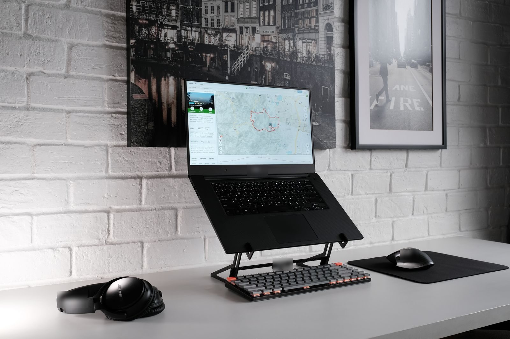

Best Laptop Stands (2026): How High Your Laptop Needs to Go
A laptop on a desk puts the top of its screen roughly 8–9 inches above the desk, far below eye level for almost everyone, which is why laptop work so often ends with a sore neck. A stand lifts the screen, but most fold-up stands only add a few inches. This guide shows how far your laptop actually needs to rise for your height, and compares four popular stands sold on Amazon US, from a compact folding stand to tall telescopic ones.
Quick picks
| Product | Best for | Amazon |
|---|---|---|
| Amazon Basics Ergonomic Laptop Stand | Best budget folding stand | Check price |
| Nulaxy C1 Laptop Stand | Compact and sturdy | Check price |
| tounee Telescopic Laptop Stand | Reaching eye level, sitting or standing | Check price |
| Nulaxy 18" Telescopic Laptop Stand | Tall telescopic with longer warranty | Check price |
How to choose
1. You'll need a separate keyboard and mouse
Once the screen is at eye level, the laptop's own keyboard is far too high to type on. Every stand here assumes you add an external keyboard and mouse; see our keyboard guide and mouse guide.
2. Work out how much lift you need
Measure from your desk to the top of your open laptop screen, then compare it with the number for your height in the table below. At a desk set to your height, most people need roughly 9–16 in of lift for the top of the screen to reach eye level.
3. Folding or telescopic
Folding stands are light and portable but usually add only a few inches. Telescopic stands on a weighted base reach much higher (up to about 18 in), which is what it takes to get a laptop near eye level, and they work for standing too.
4. Check size and load
Make sure the stand supports your laptop's screen size and weight. Most here are rated for about 22 lb, far more than any laptop.
5. A monitor may be simpler
If you work at the same desk every day, an external monitor on a riser or arm is often more comfortable than a raised laptop.
Specs side by side
| Product | Type | Height | Fits | Load | Warranty | Price tier |
|---|---|---|---|---|---|---|
| Amazon Basics Ergonomic Laptop Stand | Folding | Up to 7 in of adjustment | Laptops up to 15.6 in | Not listed | Not listed | Budget |
| Nulaxy C1 Laptop Stand | Folding | Adjustable (maximum not listed) | Laptops 10–16 in | 22 lb | 1 year | Budget |
| tounee Telescopic Laptop Stand | Telescopic | 2.1–18 in | Most laptops | 22 lb | 1 year (per listing) | Mid-range |
| Nulaxy 18" Telescopic Laptop Stand | Telescopic | Up to 18 in | Laptops and tablets | 22 lb | 2 years | Mid-range |
From Amazon listings; see the sources under each stand. Height is how far the stand lifts the laptop's base off the desk.
How much lift your laptop needs
The top of the screen should sit at or slightly below eye level. On an open 13–15 in laptop sitting on the desk, the top of the screen is roughly 8.5 in above the desk surface. Here's how far a stand has to lift it, at a desk set to your ideal height and at a standard 29.5 in desk (from our calculator, regular shoes). Measure your own laptop and adjust.
| Your height | Lift needed (ideal-height desk) | At a standard 29.5 in desk |
|---|---|---|
| 4'10" | 9.2″ | 3.3″ |
| 5'0" | 9.8″ | 4.7″ |
| 5'2" | 10.4″ | 6.1″ |
| 5'4" | 11.0″ | 7.5″ |
| 5'6" | 11.6″ | 8.9″ |
| 5'8" | 12.2″ | 10.2″ |
| 5'10" | 12.8″ | 11.6″ |
| 6'0" | 13.5″ | 13.0″ |
| 6'2" | 14.1″ | 14.4″ |
| 6'4" | 14.7″ | 15.8″ |
| 6'6" | 15.3″ | 17.2″ |
| 6'8" | 15.9″ | 18.6″ |
These are maximums; slightly lower is fine, especially with bifocals. Folding stands usually add only a few inches, so to get close to these numbers you'll want a telescopic stand.
The shortlist
Best budget folding stand
1. Amazon Basics Ergonomic Laptop Stand
A foldable, ventilated stand that the listing says gives up to 7 in of height adjustment and fits laptops up to 15.6 in. It's light enough to carry and one of the best-selling laptop stands on Amazon, but 7 in isn't enough to bring most laptop screens fully to eye level; see the table above.
What we like
- Folds flat for travel
- Ventilated surface
- Low price
Trade-offs
- Too low for eye level for most people
- Load rating not listed
Skip it if: You want the screen fully at eye level at a regular desk.
Check Amazon Basics Ergonomic Laptop Stand on Amazon →Spec sources (checked Nov 22, 2026): Amazon listing
Compact and sturdy
2. Nulaxy C1 Laptop Stand
One of the most-reviewed laptop stands on Amazon, with over 17,000 ratings. It's an aluminum folding stand with two support rods, sized for 10–16 in laptops and rated for 22 lb, with a 1-year warranty. Its maximum height isn't listed as a number, so check the listing photos against the lift you need.
What we like
- Huge number of owner ratings
- Dual support rods
- Aluminum build
Trade-offs
- Maximum height not listed
- Folding stands rarely reach eye level
Skip it if: You need a known height, or you work standing.
Check Nulaxy C1 Laptop Stand on Amazon →Spec sources (checked Nov 22, 2026): Amazon listing
Reaching eye level, sitting or standing
3. tounee Telescopic Laptop Stand
A telescopic aluminum stand on a weighted base that the listing says adjusts from 2.1 to 18 in, enough to bring most laptops to eye level, and far enough to use at a fixed desk while standing. The base rotates 360°, and it's rated for 22 lb.
What we like
- Reaches eye level for most heights
- 360° rotating base
- Works for standing
Trade-offs
- Heavier and bulkier than folding stands
- Takes desk space behind the keyboard
Skip it if: You need something to carry in a laptop bag.
Check tounee Telescopic Laptop Stand on Amazon →Spec sources (checked Nov 22, 2026): Amazon listing
Tall telescopic with longer warranty
4. Nulaxy 18" Telescopic Laptop Stand
Nulaxy's telescopic stand adjusts up to 18 in, rotates 360° and tilts, and is rated for 22 lb, with a 2-year warranty. Like the tounee, it's tall enough for eye level and for standing at a fixed desk.
What we like
- Up to 18 in high
- Tilt and 360° rotation
- 2-year warranty
Trade-offs
- Lowest height not listed
- Bulkier than folding stands
Skip it if: You mostly work on the go.
Check Nulaxy 18" Telescopic Laptop Stand on Amazon →Spec sources (checked Nov 22, 2026): Amazon listing
Why some stands aren't here
Lamicall's popular aluminum stand is well reviewed, but its listing doesn't give a height range, so we couldn't say how much it lifts. Fixed-height stands give one height only, which rarely matches the lift you need.
FAQ
How high should a laptop stand be?
High enough that the top of the screen is at or slightly below eye level. At a desk set to your height, that usually means lifting the laptop about 9–16 in; the table above shows the number for your height.
Is a laptop stand worth it?
Yes, if you pair it with a separate keyboard and mouse. A stand on its own just moves the keyboard up to an uncomfortable height.
Can I use a laptop stand while standing?
A telescopic stand that reaches about 18 in can work at a fixed desk while you stand, for short periods. For regular standing, a standing desk is better; see our standing desk guide.
Laptop stand or external monitor?
For a permanent desk, an external monitor at eye level is usually more comfortable and gives you a bigger screen. A stand is the better choice if you move around or don't have room for a monitor.